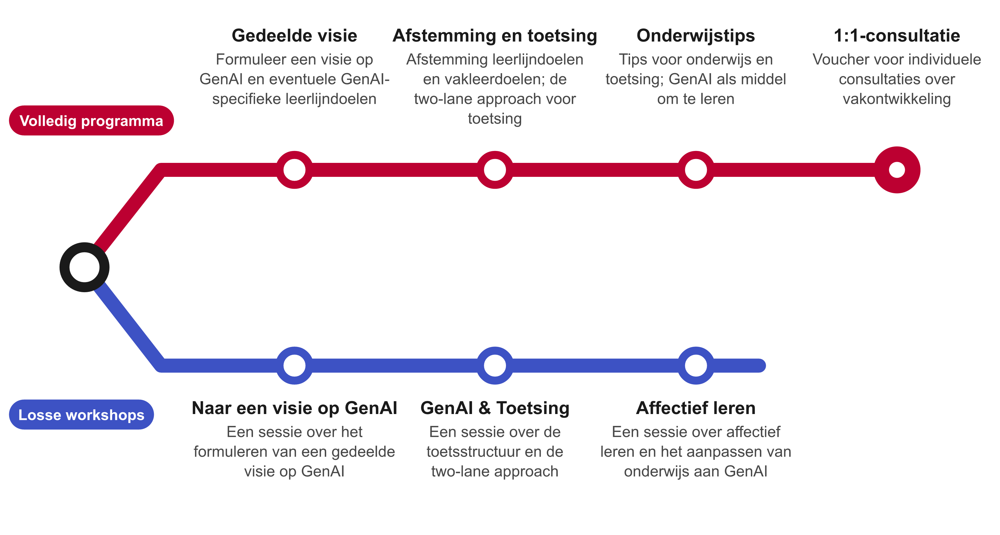
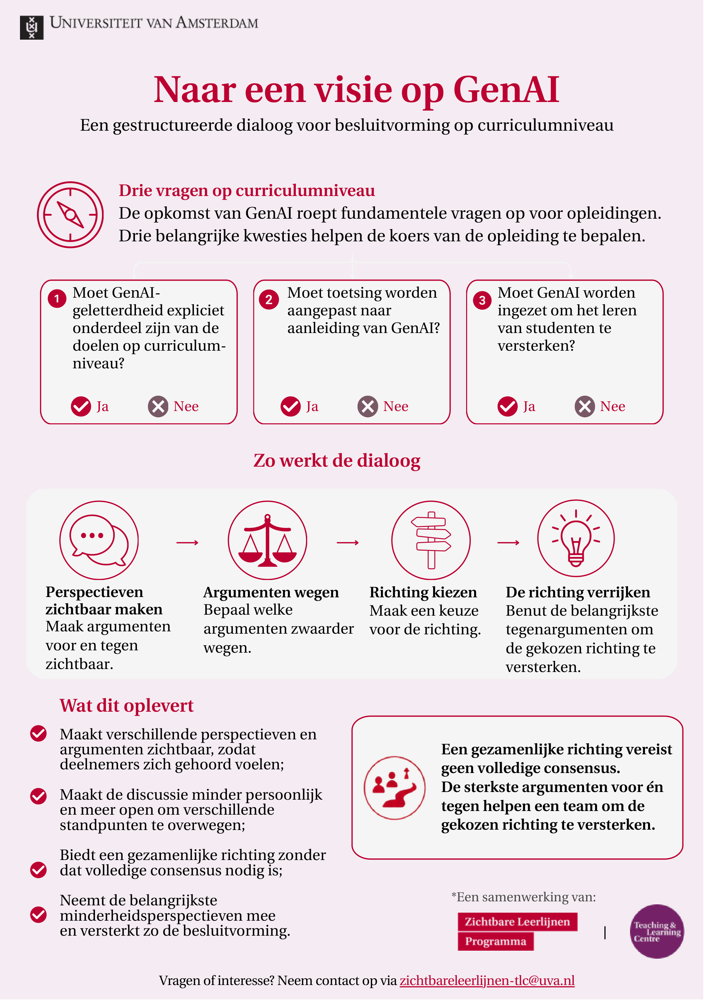
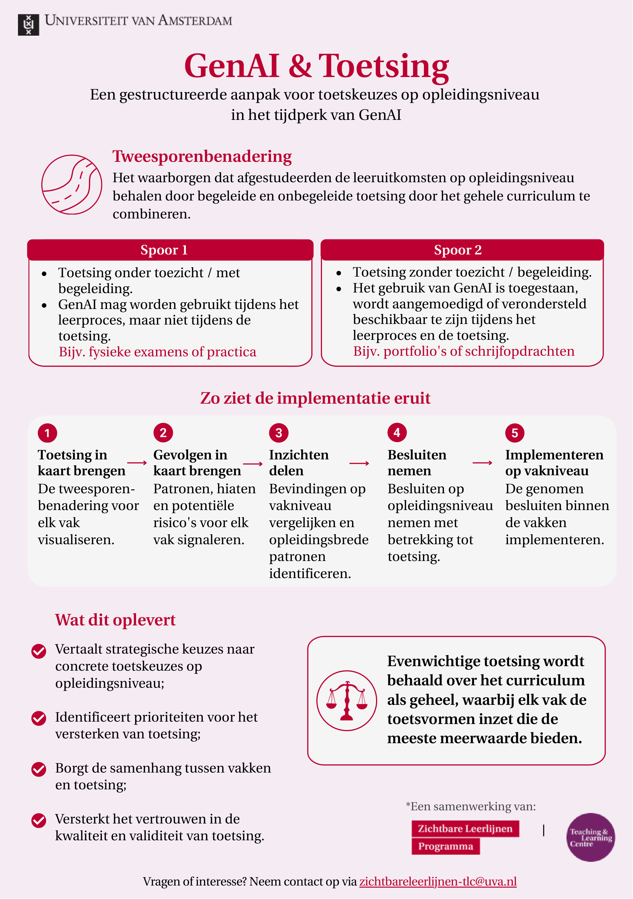

<!DOCTYPE html>
<html lang="en">
<head>
    <meta charset="utf-8" />
    <meta name="viewport" content="width=device-width, initial-scale=1.0, maximum-scale=1.0, user-scalable=no" />

    <title></title>
    <link rel="stylesheet" href="../_shared/e715a0c7082f/dist/reset.css">
    <link rel="stylesheet" href="../_shared/e715a0c7082f/dist/reveal.css" />
    <link rel="stylesheet" href="css/slides-extended.css" />
    <link rel="stylesheet" href="../_shared/e715a0c7082f/dist/theme/white.css" id="theme" />
    <link rel="stylesheet" href="../_shared/e715a0c7082f/plugin/highlight/zenburn.css" />
    <link rel="stylesheet" href="../_shared/e715a0c7082f/plugin/customcontrols/style.css">


    <link rel="stylesheet" href="css/tlc-slides.css" />

    <script defer src="../_shared/e715a0c7082f/dist/fontawesome/all.min.js"></script>

    <script type="text/javascript">
        function pageInIframe() {
            return (window.location !== window.parent.location);
        }

        let forgetPop = true;
        function onPopState(event) {
            if(forgetPop){
                forgetPop = false;
            } else if( pageInIframe()) {
                parent.postMessage(event.target.location.href, "app://obsidian.md");
            }
        }
        window.onpopstate = onPopState;
        window.onmessage = event => {
            if(event.data == "reload"){
                window.document.location.reload();
            }
            forgetPop = true;
        }

        function fitElements() {
            const itemsToFit = document.getElementsByClassName('fitText');
            for (const item in itemsToFit) {
                if (Object.hasOwnProperty.call(itemsToFit, item)) {
                    const element = itemsToFit[item];
                    fitElement(element, 1, 1000);
                    element.classList.remove('fitText');
                }
            }
        }

        function fitElement(element, start, end) {

            let size = (end + start) / 2;
            element.style.fontSize = `${size}px`;

            if (Math.abs(start - end) < 1) {
                while (element.scrollHeight > element.offsetHeight) {
                    size--;
                    element.style.fontSize = `${size}px`;
                }
                return;
            }

            if (element.scrollHeight > element.offsetHeight) {
                fitElement(element, start, size);
            } else {
                fitElement(element, size, end);
            }
        }

        document.onreadystatechange = () => {
            fitElements();
            if (document.readyState === 'complete') {
                if (pageInIframe() && window.location.href.indexOf("?export") != -1){
                    parent.postMessage(event.target.location.href, "app://obsidian.md");
                }
                if (window.location.href.indexOf("print-pdf") != -1){
                    let stateCheck = setInterval(() => {
                        clearInterval(stateCheck);
                        window.print();
                    }, 250);
                }
            }
        };
    </script>
</head>

<body>
    <div class="reveal">
        <div class="slides"><section data-separator="
?
---
?
" data-separator-vertical="
?
--
?
" data-separator-notes="note:" data-markdown><script type="text/template"><!-- .slide: class="title-slide drop" data-state="vlt-title" template="" -->
<div class="" style="position: absolute; left: 0px; top: 0px; height: 700px; width: 960px; min-height: 700px; display: flex; flex-direction: column; align-items: start; justify-content: center" absolute="true">

# Borging Toetskwaliteit op Programmaniveau

<p class="vlt-title-meta"><span class="vlt-name">Vincent Tijms</span><br><span class="vlt-role">Onderwijsadviseur GenAI en toetsing</span><br><span class="vlt-date"></span></p>

<aside class="notes"></div></aside></script></section><section ><section data-separator="
?
---
?
" data-separator-vertical="
?
--
?
" data-separator-notes="note:" data-markdown><script type="text/template"><!-- .slide: class="drop" template="" -->
<div class="" style="position: absolute; left: 0px; top: 0px; height: 700px; width: 960px; min-height: 700px; display: flex; flex-direction: column; align-items: start; justify-content: center" absolute="true">

# Achtergrond

- Examencommissies werken vanuit wettelijk mandaat om toetskwaliteit binnen specifieke opleiding(en) te garanderen
- Doorgaans gebeurt dit door kwaliteitscriteria op vakniveau te onderzoeken en te bespreken met relevante examinatoren en opleidingsdirecteur
- Er zijn echter kwaliteitscriteria die betrekking hebben op de *samenhang* van toetselementen
- Aandacht voor deze criteria neemt toe:
	- Door sterkere coherentie van curricula is samenhang toetsprogramma zichtbaarder
	- Doordat GenAI tot toetskundige oplossingen op programmaniveau heeft geleid
</div></script></section><section data-separator="
?
---
?
" data-separator-vertical="
?
--
?
" data-separator-notes="note:" data-markdown><script type="text/template"><!-- .slide: class="drop" template="" -->
<div class="" style="position: absolute; left: 0px; top: 0px; height: 700px; width: 960px; min-height: 700px; display: flex; flex-direction: column; align-items: start; justify-content: center" absolute="true">

# Achtergrond

## Wat zijn kwaliteitscriteria voor samenhang toetselementen?

- Dekking en constructieve afstemming
- Progressie gedurende curriculum
- Variatie
- Redundantie en triangulatie
- Feedbackloops
- Transparantie/draagvlak

<p class="smaller">Baartman et al. (2017)</p>
</div>

<aside class="notes"><p>Triangulatie betekent zoveel als onderliggende competenties via verschillende toetsvormen meten om een zuiver beeld te krijgen voor diplomering. De impact van GenAI hier is dat er zorgvuldig gekeken wordt of die triangulatie nog effectief is - dat betekent niet dat elke toetsvorm &quot;AI-proof&quot; moet zijn, maar wel dat het geheel aan toetsvormen een nauwkeurig beeld schetst van het leren door de student.</p>
</aside></script></section></section><section data-separator="
?
---
?
" data-separator-vertical="
?
--
?
" data-separator-notes="note:" data-markdown><script type="text/template"><!-- .slide: class="two-lane drop" template="" -->
<div class="" style="position: absolute; left: 0px; top: 0px; height: 700px; width: 960px; min-height: 700px; display: flex; flex-direction: column; align-items: start; justify-content: center" absolute="true">

# Two-lane approach

| **Lane 1**<br>Beveiligde toetsing                                                                                                                                                    | **Lane 2**<br>AI-bewuste toetsing                                                                                                                                                             |
| ------------------------------------------------------------------------------------------------------------------------------------------------------------------------------------ | --------------------------------------------------------------------------------------------------------------------------------------------------------------------------------------------- |
| • Gesurveilleerd / fysiek aanwezig<br>• AI-gebruik beperkt of gemonitord<br>• Duidelijk valide maat van individuele competentie<br>• AI mogelijk toegestaan tijdens het *leerproces* | • Open, niet-gesurveilleerde opdrachten (bijv. authentiek, take-home)<br>• Werk met AI-ondersteuning (met verantwoording)<br>• AI ingezet waar relevant, bij voorkeur ondersteund en begeleid |
| **Voorbeelden**<br>Fysieke tentamens, (groeps)mondelinge tentamens, practica, presentatie                                                                                            | **Voorbeelden**<br>Projectresultaten, portfolio's, take-home schrijfopdrachten, take-home reflectieverslagen, presentatie                                                                     |

<aside class="notes"><p>Je kunt nog altijd AI-gebruik tijdens het leerproces (bij Lane 1) of het maakproces (bij Lane 2) begrenzen door te normeren. Net zoals we zeggen dat een student op tijd moet beginnen met een opdracht of leeswerk, kunnen we ook zeggen welk GenAI-gebruik we onwenselijk vinden. Deze variant op de two-lane approach gaat om de aard van de <em>toetsing</em> - we moeten in ons ontwerp rekening houden met mogelijk AI-gebruik bij leren en, in geval Lane 2, bij het maken van becijferde opdrachten.</p>
</div></aside></script></section><section data-separator="
?
---
?
" data-separator-vertical="
?
--
?
" data-separator-notes="note:" data-markdown><script type="text/template"><!-- .slide: class="zoom-slide drop" template="" -->
<div class="" style="position: absolute; left: 0px; top: 0px; height: 700px; width: 960px; min-height: 700px; display: flex; flex-direction: column; align-items: start; justify-content: center" absolute="true">

# Strategie two-lane approach

1. Formuleer op **vakniveau** passende leerdoelen met bijbehorende toetsvormen en classificeer de lanes
2. Zoom dan uit om op **programmaniveau** te kijken in welke lanes leerlijndoelen worden getoetst gedurende het programma
3. Kijk met die informatie in de hand of er op **vakniveau** wijzigingen aan toetsvormen nodig zijn
4. Voor borging **eindtermen** wil je in in de regel Lane 1-toetsing zien op leerlijndoelniveau

<input type="checkbox" id="zoom-strategie" class="zoomtoggle">
<label for="zoom-strategie" class="zoomfig">


</label>
</div>

<aside class="notes"><p>Het staat opleidingen (en examencommissies) vrij om een strategie op maat te kiezen. Mogelijk is Lane 1 toetsing in jaar 1 ook belangrijk om fundament te leggen. Maar om het niveau leerlijndoelen te garanderen verwacht je ook Lane 1-toetsing op leerlijndoelniveau, idealiter in laatste jaar van opleiding.</p>
</aside></script></section><section ><section data-separator="
?
---
?
" data-separator-vertical="
?
--
?
" data-separator-notes="note:" data-markdown><script type="text/template"><!-- .slide: style="--ov: calc((0.428 * var(--viewport-width) - var(--slide-width) * var(--slide-scale) / 2) / var(--slide-scale))" class="top-split toetskaart drop" template="" -->
<div class="" style="position: absolute; left: 0px; top: 0px; height: 700px; width: 960px; min-height: 700px; display: flex; flex-direction: column; align-items: start; justify-content: center" absolute="true">

# ToetsKaart

<div style="font-size:0.82em;width:calc(349px + var(--ov));margin-left:3.84px">

- Webapp die toetsprogramma's analyseert voor examencommissies
- Vertaalt het programma naar een dashboard
- Toont uitlijning van eindtermen, leerlijndoelen, vakleerdoelen en toetsvormen
- Toont samenhang en diversiteit van toetsvormen, alsmede lanes
- Geeft risico-analyse en rapportage binnen een expliciet beoordelingskader

</div>

<iframe src="https://toetskaart.duckdns.org" style="position:absolute;top:140px;right:calc(-1 * var(--ov));width:580px;height:480px;border:2px solid #d6d9e3;border-radius:10px;background:#fff" loading="lazy"></iframe>

<aside class="notes"></div></aside></script></section><section data-separator="
?
---
?
" data-separator-vertical="
?
--
?
" data-separator-notes="note:" data-markdown><script type="text/template"><!-- .slide: style="--m: calc((var(--viewport-width) - var(--slide-width) * var(--slide-scale)) / 2 / var(--slide-scale) - 20px / var(--slide-scale))" class="drop" template="" -->
<div class="" style="position: absolute; left: 0px; top: 0px; height: 700px; width: 960px; min-height: 700px; display: flex; flex-direction: column; align-items: start; justify-content: center" absolute="true">

<iframe src="https://toetskaart.duckdns.org" style="position:absolute;top:calc(120px / var(--slide-scale));left:calc(-1 * var(--m));width:calc(var(--slide-width) + 2 * var(--m));height:calc(var(--slide-height) - 120px / var(--slide-scale) - 88px);max-width:none;max-height:none;border:2px solid #d6d9e3;border-radius:10px;background:#fff" loading="lazy"></iframe>
</div></script></section></section><section data-separator="
?
---
?
" data-separator-vertical="
?
--
?
" data-separator-notes="note:" data-markdown><script type="text/template"><!-- .slide: class="drop" template="" -->
<div class="" style="position: absolute; left: 0px; top: 0px; height: 700px; width: 960px; min-height: 700px; display: flex; flex-direction: column; align-items: start; justify-content: center" absolute="true">

# Wat ToetsKaart *niet* is

- ToetsKaart is ondersteunend, niet maatgevend: mandaat voor borging ligt bij examencommissies
- ToetsKaart kan geen onderscheid maken tussen bewuste en onbewuste afwijkingen van de norm: gesprek met opleiding blijft nodig
</div></script></section><section ><section data-separator="
?
---
?
" data-separator-vertical="
?
--
?
" data-separator-notes="note:" data-markdown><script type="text/template"><!-- .slide: class="top-title drop" template="" -->
<div class="" style="position: absolute; left: 0px; top: 0px; height: 700px; width: 960px; min-height: 700px; display: flex; flex-direction: column; align-items: start; justify-content: center" absolute="true">

# Zichtbare Leerlijnen: Verdiepingstraject AI


</div></script></section><section data-separator="
?
---
?
" data-separator-vertical="
?
--
?
" data-separator-notes="note:" data-markdown><script type="text/template"><!-- .slide: class="top-split drop" template="" -->
<div class="" style="position: absolute; left: 0px; top: 0px; height: 700px; width: 960px; min-height: 700px; display: flex; flex-direction: column; align-items: start; justify-content: center" absolute="true">

<split gap="3">







</split>
</div></script></section></section><section data-separator="
?
---
?
" data-separator-vertical="
?
--
?
" data-separator-notes="note:" data-markdown><script type="text/template"><!-- .slide: class="thanks drop" template="" -->
<div class="" style="position: absolute; left: 0px; top: 0px; height: 700px; width: 960px; min-height: 700px; display: flex; flex-direction: column; align-items: start; justify-content: center" absolute="true">

## Bedankt voor jullie aandacht

<div class="thx-grid">
<div class="thx-list">
<div class="thx-row"><div><div class="thx-name">Vincent Tijms</div><div class="thx-role">Onderwijsadviseur GenAI en toetsing</div></div><a class="thx-link" href="mailto:v.tijms@uva.nl">v.tijms@uva.nl</a></div>
<div class="thx-row"><div><div class="thx-name">Zichtbare Leerlijnen</div><div class="thx-role">Voor het ZLP-verdiepingstraject AI</div></div><a class="thx-link" href="mailto:zichtbareleerlijnen-tlc@uva.nl">zichtbareleerlijnen-tlc@uva.nl</a></div>
<div class="thx-row"><div><div class="thx-name">TLC Science AI Team</div><div class="thx-role">Expertiseteam AI in onderwijs</div></div><a class="thx-link" href="mailto:ai-tlc-science@uva.nl">ai-tlc-science@uva.nl</a></div>
<div class="thx-row"><div><div class="thx-name">Slides</div><div class="thx-role">Online beschikbaar</div></div><a class="thx-link" href="https://slides.connectingcells.com">slides.connectingcells.com</a></div>
</div>
<div class="thx-qr">


Scan voor de slides

</div>
</div>
</div></script></section><section data-separator="
?
---
?
" data-separator-vertical="
?
--
?
" data-separator-notes="note:" data-markdown><script type="text/template"><!-- .slide: class="drop" template="" -->
<div class="" style="position: absolute; left: 0px; top: 0px; height: 700px; width: 960px; min-height: 700px; display: flex; flex-direction: column; align-items: start; justify-content: center" absolute="true">

# Referenties

- Baartman, L., Kloppenburg, R., & Prins, F. (2017). Kwaliteit van toetsprogramma’s. In _Toetsen in het hoger onderwijs_ (pp. 37-49). Bohn Stafleu van Loghum, Houten.
</div></script></section></div>
    </div>

    <script src="../_shared/e715a0c7082f/dist/reveal.js"></script>
    <script src="../_shared/e715a0c7082f/plugin/notes/notes.js"></script>
    <script src="../_shared/e715a0c7082f/plugin/markdown/markdown.js"></script>
    <script src="../_shared/e715a0c7082f/plugin/obsidian-markdown.js"></script>
    <script src="../_shared/e715a0c7082f/plugin/highlight/highlight.js"></script>

    <script src="../_shared/e715a0c7082f/plugin/zoom/zoom.js"></script>
    <script src="../_shared/e715a0c7082f/plugin/math/math.js"></script>
    <script src="../_shared/e715a0c7082f/plugin/mermaid/mermaid.js"></script>
    <script src="../_shared/e715a0c7082f/plugin/chart/chart.umd.js"></script>
    <script src="../_shared/e715a0c7082f/plugin/chart/plugin.js"></script>
    <script src="../_shared/e715a0c7082f/plugin/customcontrols/plugin.js"></script>


    <script>
        function extend() {
            const target = {};
            for (let i = 0; i < arguments.length; i++) {
                const source = arguments[i];
                for (const key in source) {
                    if (source.hasOwnProperty(key)) {
                        target[key] = source[key];
                    }
                }
            }
            return target;
        }

        function isLight(color) {
            // normalize to rgb(a)
            const optionEl = document.createElement("option");
            optionEl.style.color = color;
            const normalizedColor = optionEl.style.color;

            const match = normalizedColor.match(/(\d+), (\d+), (\d+)/);
            if (!match) return false;
            const [, c_r, c_g, c_b] = match;

            const brightness = ((c_r * 299) + (c_g * 587) + (c_b * 114)) / 1000;
            return brightness > 155;
        }

        const bgColor = getComputedStyle(document.documentElement).getPropertyValue('--r-background-color').trim();

        if (isLight(bgColor)) {
            document.body.classList.add('has-light-background');
        } else {
            document.body.classList.add('has-dark-background');
        }

        // default options to init reveal.js
        const defaultOptions = {
            controls: true,
            progress: true,
            history: true,
            center: true,
            transition: 'default', // none/fade/slide/convex/concave/zoom
            plugins: [
                ObsidianMarkdown,
                RevealHighlight,
                RevealZoom,
                RevealNotes,
                RevealMath.KaTeX,
                RevealMermaid,
                RevealChart,
                RevealCustomControls,
            ],
            allottedTime: "120",

            katex: {
                local: '../_shared/e715a0c7082f/plugin/math/katex',
                extensions: ["mhchem"],
            },
            markdown: {
                gfm: true,
            },
            mermaid: {
                theme: isLight(bgColor) ? 'default' : 'dark',
            },
            customcontrols: {
                controls: [
                    {
                        id: 'toggle-overview',
                        title: 'Toggle overview (O)',
                        icon: '<i class="fa fa-th"></i>',
                        action: 'Reveal.toggleOverview();'
                    },
                ]
            },
        };

        if ( pageInIframe() ) {
            defaultOptions.scrollActivationWidth = 5;
        }

        // options from URL query string
        const queryOptions = Reveal().getQueryHash() || {};

        const options = extend(defaultOptions, {"controls":true,"progress":true,"slideNumber":false,"center":false,"transition":"none","transitionSpeed":"default","width":960,"height":700,"margin":0.04}, queryOptions);
    </script>

    <script>
      /**
       * KaTeX Equation Numbering Note
       *
       * KaTeX maintains a global equation counter for \begin{equation} environments.
       * When navigating between slides, reveal.js math plugin may re-render math, causing
       * equation numbers to change randomly.
       *
       * Note: Regular $$ blocks don't have equation numbers - only \begin{equation} does.
       *
       * If you experience issues with equation numbers changing:
       * Use manual \tag{} commands: \begin{equation}\tag{1} ... \end{equation}
       */

      Reveal.initialize(options);
    </script>
    <!-- created with Slides Extended reveal.html template -->
</body>
</html>
